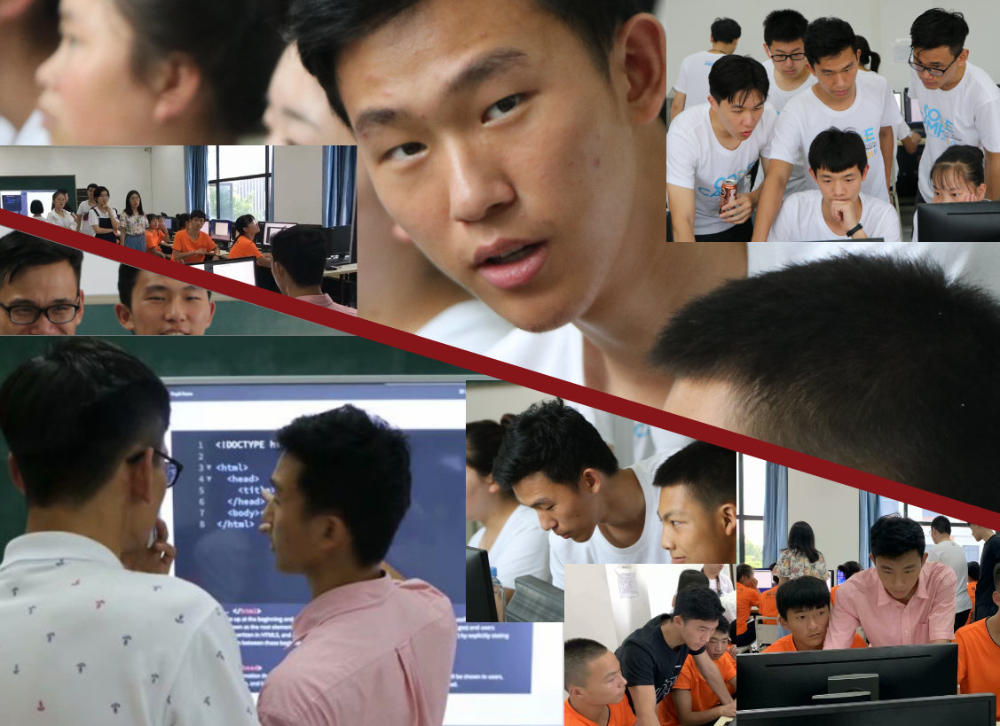
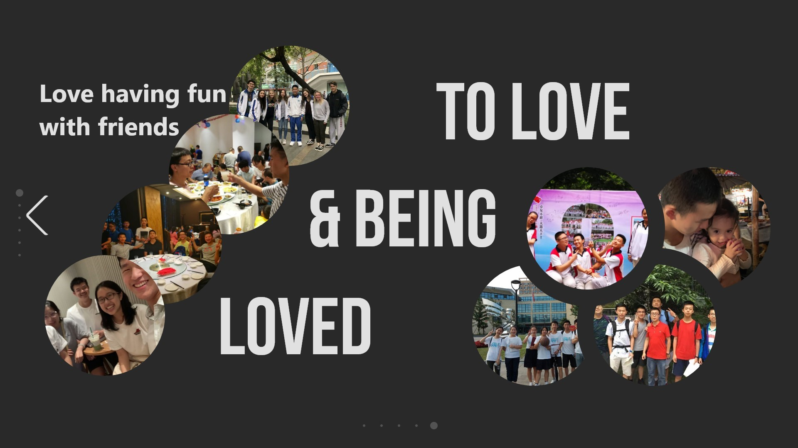
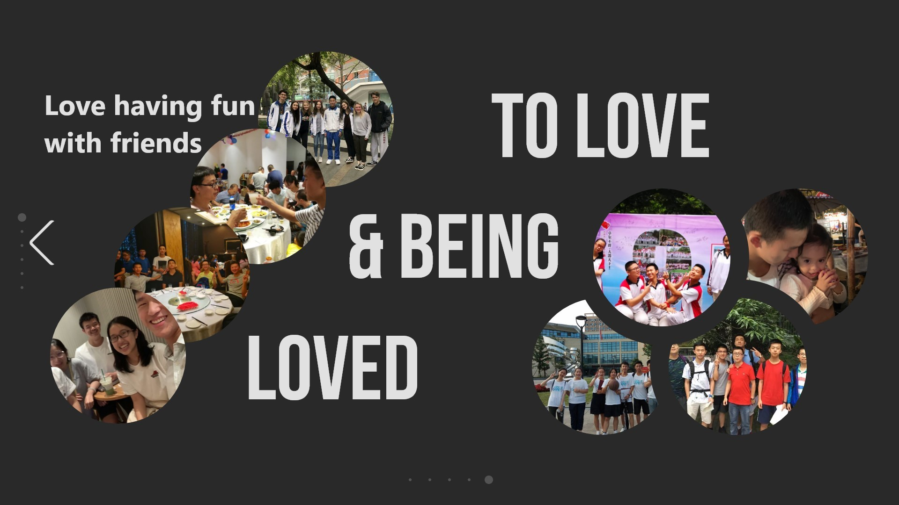

Team Player & Leader
GEEKTON
CO-FOUNDER
Donec ullamcorper nulla non metus auctor fringilla. Vestibulum id ligula porta felis euismod semper. Praesent commodo cursus magna, vel scelerisque nisl consectetur. Fusce dapibus, tellus ac cursus commodo.
SAC is one of the four student unions in my school. It is the organization that manages all the clubs in our school and organizes a number of the students' activities in school. It sounded like a great student union, and that was why when I heard about this particular association, I joined instantly. However, it was not after I joined it did I realized it is not as good as it seems. But after a year as its member, I realized I was gradual growing into it, so, I decided to make a difference, to make the association I was in great. After that, there was a-year-long fight as one of the presidents of the group... It was a hard fight, but we eventually achieved in making the SAC the best student union in my school.
Things I contributed to SAC, and things I learnt -->>
read the whole story of "SAC AND ME" -->>
C.D.D.C.
CO-FOUNDER
C.D.D.C. stands for ChengDu Diving Club. I have tried snorkeling but never diving, which I would love to try when I have the chance. The other two founders of the C.D.D.C. are both experienced scuba divers, and I am in charge of technical-support, like website-building and WeChat subscription account managing.
P.s. the logo to the right is designed and made by me.
ANZ & ZHXI
AT BAINIAN
VOLUNTEER AND TA
A 6 days volunteering and TAing at BN Vocational School (from June 24th to 29) was very rewarding. It was a great opportunity to get to know students who's backgrounds were very different from us and be friends with them and the kind of lives we never had. "We let you know what's coding like, you let us know what's life like."

LEMAN
TUTOR & CURRICULUM BUILDING
I have never taught kids this young before. It was a disaster at first, but because of the patient tutoring and guiding by Landon (who is a great teacher for kindergarten kids) and my constant trying, I gradually got better. And by the end of my time with them, I was really into teaching them.
What I learnt while my days in Leman:
(Order is irrelevant)
- Always prepare more than expected to teach.
- Treats and rewards are more useful to kindergarten kids than scoffing and punishing.
- How to write a curriculum.
- How to make good stories and adjust difficulty for kids.
- Teaching kids never really need big words.
BOOTCAMPS
TEACHER'S ASSISTANT
I always love the job of TAing, and I have done a lot of them. Guiding and exploring with other students through their hard times, really make me feel great, especially when we both devote into a job that really pushes our brain to the edge. I think the reason why I prefer TAing than teaching is that I don't really want to be seem as above someone, I want to be part of their team and struggle other. The other reason I love to TA through classes is that I can really learn something new every time I go through the course.
BEING PART OF ZHXI
DOING ALL SORTS OF THINGS

Donec ullamcorper nulla non metus auctor fringilla. Vestibulum id ligula porta felis euismod semper. Praesent commodo cursus magna, vel scelerisque nisl consectetur. Fusce dapibus, tellus ac cursus commodo.
Donec ullamcorper nulla non metus auctor fringilla. Vestibulum id ligula porta felis euismod semper. Praesent commodo cursus magna, vel scelerisque nisl consectetur. Fusce dapibus, tellus ac cursus commodo.
Giving back to
My Community
FORSTERING INTERESTS
IN GO GAME
read more about the event -->>
"Go", which is also know as "Weiqi" in China, has grown popular recent years around the world because of the famous: "game of AlphaGo and Li Sedol“. Before that historical event, no one could ever believe that a machine, and especially a machine that cannot do the math that involves the calculation of the factorial of 361 can beat human beings on the game of Go. The core and the reason of Go being so fascinating is the uncanny, unpredictable and myriads of changes that can happen in a single round of Go. But all that was solved by programmers and technicians, it was really a hard blow on Go fanatics and people's interest in this game.
But Go lovers like me would never let others just walk away from this interesting, strategical game. So, by grasping the opportunity of the "National Fitness Day" of the city, we were ready to foster kids interest in Go.
WEEKLY SCHEDULE
Because of the recent flourish of bicycle sharing system, shared bikes are everywhere. Although it is convenient to be able to get on a bike wherever we are, but it can really be a problem if they are not nicely "taken care of". Some people park the bikes where they are not supposed to park, blocking bike lanes and side walks; there are also others who are so hurry to get to their destiny that they don't even care whether the bikes are parked nicely or just rowed to there sides.
One day a friend and I accidentally fall into this topic, after much thought and planning, we decided that maybe we should do something about it. So we agreed to schedule two hours on Sunday afternoons to do something for the community. Most of the time we help with arranging the shared bikes, we also clean hallways once every month.
The schedule not only remind myself of thinking twice what "a little convenience for one can be hard works" for others, it also benefits everyone who is living in the community, by having a clean and tidy environment.
PREP TALKS
Before the Zhongkao, which is the test Chinese students take to get to senior high schools, I never thought I would be able to get to the school I am in right now, but it was my dream. However, the truth was that, I never even for once got into the top 100 list of my school before 9th grade. At the end of 8th grade, I had a really nice talk with a former basketball teammate, who got an unbelievable score on the test, and like me, he was not good at taking tests. He made me realize that I should never blame others or the educational system, which I always think was useless and unfair, for not getting good grades in school. We can really make a difference if when accept that hard work will off. And it seemed it really did, and I really believe he changed the course of my life. And I really others to have that chance, have the chance to meet someone who will help them get out of blank bewilderment when facing hurdles in life especially on critical moments like this. And thanks to my former head teacher Mrs. He and English teacher Mr. Long, I began sharing my own experience and studying tricks with junior high school students hoping to make a difference to their lives.

THE DISASTER BROUGHT US TOGETHER
Although the World Exposition event may seems to be a little overly commercialized now, back then I was too young to understand what is called advertisement. I remember I dived into the cause of helping students from Wenchuang (the disaster stricken area) to recover from the desperate experience they had undergone. I remember immediately after the earthquake I threw in all the pocket money I had and I had saved into some of the donations. I was only 6 that time, but I can still recall my times with my friends from Wenchuang
view more -->>
view more -->>
2008.05.12 EARTHQUAKE
2008.??.18 DONATION ON XILING
2010.05.12 WORLD EXPOSITION
Years of devotion in
Education
THE ORIGIN OF ALL THE STORIES
MY MOTHER USED TO BE A TEACHER AT SWUFE, AND HER TALENT OF BEING A TEACHER IS ONE OF THE DECISIVE REASONS FOR ME TO ACHIEVE WHAT I HAVE. I SEEM TO HAVE PICKED UP THAT TALENT, AND BECAUSE OF THE RIGHT TIMING, I JUMPED INTO THE REALM OF EDUCATION.
THE BEGINING
TEACHING FELLOW CLASSMATES
Because of the Chinese culture of helping others, my teacher always encouraged us to help others whenever we could. I was doing quite well in 9th grade, but my best friend was having some trouble with his school work, so I tried my best to help him.
We sneaked out of the classroom every time during nap times, and did some extra-work to help him with his schoolwork (Math, Physics, Chemistry, and English). His grade increased a lot from when we started doing the extra-hour work. After that, one of my teachers discovered talent of teaching, and asked me if I want to tutor some of her classes, and do some extra-hours tutoring with some other students too. And that's the start of my teaching experience.
MATH TEACHING
KIDS TEACHING TO CURRICULUM BUILDING
I might know how to study for English tests in Junior highs, but Math is a whole new story. During my junior high period, I started knowing nothing about Math test to a genuine "test taking machine". And I always believe that if I can end up getting an almost perfect Math score in "Zhongkao" using the method I applied in learning Math, I can teach everyone to get the perfect score.

I started with one-on-one tutoring, and it turns out my method really works. Their score rose from 120 and 110 to 140 in just a week, and one of them actually got a perfect score on one of the mathematics competition while the rest from his school did react 90.
But that was for students already knowing the basic stuffs, I am know trying to start from the very basic level. So, I started writing a curriculum for starters, which after I finish it, will lead students from no foundation at all to almost perfect score.
I am still teaching the first batch of the students, hope they will make it to the top.
Contact Me at:
Bill-Yunjie-Zhang@outlook.com
 
